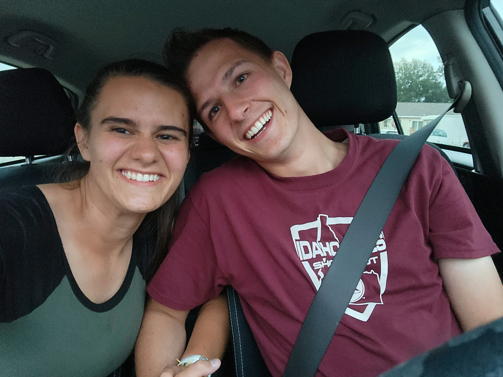

Overview
Purpose
The purpose of this is to create a place for people to go to get info on my wedding next year
Audience
My target group are people who have been invited to the wedding. they want to learn things about the wedding such as where it is and ways to give gifts. They will be accessing it by phone mostly possibly desktop and laptop.
Branding
Website Logo
Style Guide
Color Palette
Palette URL:
https://coolors.co/b57edc-000080-d6cadd-20a4f3-d4af37| Primary | Secondary | Accent 1 | Accent 2 | Accent 3 |
|---|---|---|---|---|
| [#B57EDC] | [#000080] | [#20A4F3] | [#D6CADD] | [#D4AF37] |
Typography
Heading Font: "Shadows into light"
Paragraph Font: "Helvetica"
Normal paragraph example
Rachel Hurst is the greatest woman I have ever met! She is kind and sweet. She is always happy even under the hardest circumstances. She is outgoing and always ready to have fun!
Colored paragraph example
Mawage. Mawage is wot bwings us togeder today. Mawage, that bwessed awangment, that dweam wifin a dweam. And wuv, tru wuv, will fowow you foweva... So tweasure your wuv.
Navigation
Site Map
Wireframes
Home